The cipher slip in Tanquerey's Synopsis theologiae dogmaticae (1901)
Source: r/codes: "Unknown cipher on a slip found in a 1901 theology book (Poland)", posted by u/ColdDivide4423. The slip was found at p. 325 (De Angelis) of A. Tanquerey, Synopsis theologiae dogmaticae, vol. 1, bought from an antiquarian bookshop in Poland.
solved The sentence after the colon is Polish, written in a home-made substitution alphabet that keeps Polish diacritics:
1. [heading]: Zgodzenie się na wolę Bożą.
"1. [heading]: Consent to God's will." (literally "agreeing to the will of God")
unread The title (I. ………) and the heading word before the colon are in a separate, heavier "capital" glyph set. That set shares no letters with the solved sentence, and 17 glyphs are too few to break it on their own. Both are still unread (see below).
Nothing demonic is going on. "Zgodzenie się na wolę Bożą" is a stock phrase of Catholic ascetical writing, about resignation to God's will. The Polish translation of Tanquerey's own ascetical manual uses the near-identical "zdanie się na wolę bożą". The slip probably landed on the page about magnetism and spiritism by chance, as a bookmark. The reverse side ("1. Powołanie. 2. Katechizmy." = "1. Vocation. 2. Catechisms.") is a numbered list in the same layout. That fits a seminarian's or priest's study or sermon notes. Consenting to God's will is the classic "human side" of a vocation. That link is suggestive but unproven.
The slip


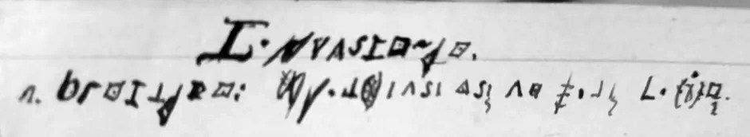
Interlinear decipherment
■ decoded■ decoded capital■ unread (heading glyph set)■ punctuation
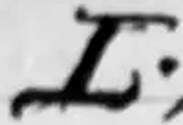
I.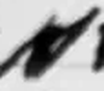
? ?
? ?
? ?
?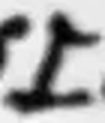
?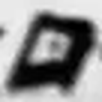
? ?
?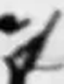
?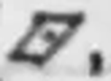
? , 1.
1.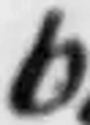
? ?
?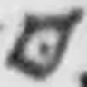
? ?
? ?
?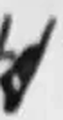
?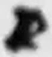
?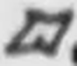
? :
: Z
Z g
g o
o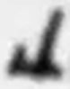
d z
z e
e n
n i
i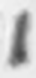
e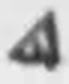
s i
i ę
ę n
n a
a w
w o
o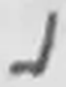
l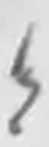
ę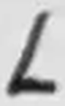
B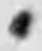
o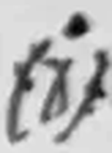
ż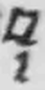
ą .
.The key (thin-pen alphabet)
Sixteen glyph types are read. Two features made the system crackable. Polish diacritics are added on top of the cipher letter: e→ę and a→ą get a zig-zag ogonek, and z→ż gets a dot above. Capitals appear exactly where Polish orthography wants them: the first word after the colon, and Bożą.
| glyph | description | Polish | evidence |
|---|---|---|---|
| small mid-height dot | o | Appears 3× inside words, always where Polish needs o (zgodzenie, wolę, Bożą). My first pass took it for punctuation, and that one mistake hid the whole solution. |
| short slanted stroke (like a dotless ı) | e | Ends the 9-glyph word twice (…enie). |
| the same stroke + zigzag hook below | ę | The hook is a Polish ogonek. The cipher keeps diacritics: e→ę is drawn as cipher-e + hook. |
| small square (heavily inked here) | a | na; the same square with a hook ends the line as ą. |
| square + zigzag hook below | ą | Second ogonek glyph. It pairs with the square = a, as the stroke pairs with e/ę. | |
| Λ (pointed arch) | n | …enie and na. |
| S | i | …enie and się: same glyph, same letter. |
| filled triangle ∆ | s | się. | |
| staff with two crossbars ‡ | w | wolę. |
| upright with flat foot to the left ┘ | l | wolę. Compare the next row: the d glyph has an up-turned, bowl-like foot. | |
| upright with up-turned bowl (open cursive d) | d | zgodzenie. At low zoom it looks like the l glyph; side by side the two differ. | |
| long-armed check mark √ | g | zgodzenie (w is already ‡, so zwodzenie is excluded). |
| almond/oval with dots | z | zgodzenie. |
| larger slashed oval with an "x" mark | Z (capital) | Sentence-initial Z. It is a bigger, decorated oval like the lower-case z. |
| oval-with-x + dot above | ż | Bożą. The dot above is the Polish over-dot: z→ż, again written as cipher-z + diacritic. | |
| L-shape └ | B (capital) | Bożą. Capitalised exactly where Polish religious writing capitalises Boża. |
How it was cracked
- Known scripts first. I compared the glyphs against Glagolitic, Phoenician/Paleo-Hebrew, Old Italic, Old Hungarian, Coptic and Gothic, and against Greek, Cyrillic and Hebrew letter shapes. A few shapes overlap by chance (Λ, ∆, θ), but no script accounts for the set. It is an invented alphabet.
- A test that failed usefully. My first transcription treated the mid-dots as punctuation, merged the two "foot" glyphs into one, and treated the two oval glyphs as unrelated. I then asked whether any one-glyph-one-letter reading turned every word into a dictionary word. I tried Polish (a 50k-word frequency list plus the vocabulary of the Polish Tanquerey), Tanquerey's Latin, and German, French, Italian and English. Zero full-line solutions came back in every language. That pointed to a wrong transcription model, not to a hopeless text.
- The diacritic clue. Two glyphs have a zig-zag hook hanging below the line. One is the short stroke that ends a 9-glyph word twice. The other is the square that ends the line. A hook under a vowel is a Polish ogonek, so stroke/stroke+hook = e/ę and square/square+hook = a/ą. A 3-glyph word ends in the hooked stroke (ę), and its middle glyph S also appears in the 9-glyph word's ending. That makes it się, with S = i. The next 2-glyph word, sharing the Λ, becomes na. That gives the very common Polish frame "…enie się na …".
- The dot is a letter. Read as o, the dot completes wolę (4 glyphs ending in the ę-glyph) and the familiar idiom na wolę Bożą. The last word then has to be Bożą: capital B, o, a z-oval with a dot above (ż), and the hooked square (ą).
- Separating d from l. Wolę and the 9-glyph word seemed to need the same glyph for both l and d. At high zoom they differ: the l glyph has a flat foot, and the d glyph has an up-turned bowl. With that settled, the 9-glyph word is Zgodzenie. Its first and fifth glyphs are both z-ovals (the first one larger and decorated, as a capital). The √ glyph cannot be w, because ‡ already is, so it is g.
- Checking uniqueness. I took the final glyph model (shared glyphs, e/ę, a/ą and z/ż pairings, capitals allowed to repeat a lower-case letter). A dictionary search over a ~70,000-form Polish list gives 377 word-consistent readings of the five words. Ranked by plain word frequency, "…enie się na wolę Bożą" is already in the top five, and it is the only one that is idiomatic. (The rest are word salad such as "chodzenie się na mogę bożą".) The frequency list happens to lack "zgodzenie" itself. The Polish Tanquerey has "zgodzeniem się … na" and "zgodzeniu się na działanie Boga".
What is still unread: the title and the heading word
The title and the word before the colon are written larger, with a heavier pen. Their glyphs are a different set: they share three glyphs with each other (the dotted square, the serifed Ɪ, and the "4"-like glyph) but almost nothing with the solved sentence.
- Title (after "I."): I. [N*] [V] [A] [S] [Ɪ] [▫] [~] [4] [▫] ,. Nine glyphs, or eight if the small tilde is a flourish or accent. The dotted square repeats in positions 6 and 9.
- Heading: 1. [b] [r] [▫] [Ɪ] [⊥] [4] [■] [▫] :. Eight glyphs, with the dotted square in positions 3 and 8.
- Reading them with the thin-pen key (S=i, square=a, …) gives nothing Polish. I also solved them as their own small substitution against Polish and Latin word lists, and no meaningful pair fits. The only pairs that survive are random, e.g. trzymania / kłamliwa. Single-word fits like Medytacja (title) or Pierwsze, Probatio (heading) are pattern coincidences. They do not survive the shared-glyph constraints.
- So the bold set is most likely a separate capital alphabet. Reading it needs more text in the same hand: other slips or margin notes from the same book, if the OP has any.
Ruled out along the way
- Known historical scripts: Glagolitic, Phoenician/Paleo-Hebrew, Old Italic, Old Hungarian (rovás), Coptic, Gothic, and Greek/Cyrillic/Hebrew transliteration.
- Mirror writing, 180° rotation, and 90° rotation of the line.
- Latin-letter-literal readings, e.g. the title as "INVASIO(NE)…": they don't extend across words.
- Plain one-glyph-one-letter substitution with dots as punctuation, in Polish, Latin, German, French, Italian and English: zero consistent full-line solutions.
- Latin plaintext for the thin-pen sentence: exorcismi fits W2's pattern but nothing else follows from it.
Sources and tools
- Reddit thread (images and OP's description): r/codes 1y5g8r3, u/ColdDivide4423. The comments could not be fetched from here.
- A. Tanquerey, Zarys teologji ascetycznej i mistycznej, t. 2 (Polish tr., 1949), OCR text at archive.org/details/Tanquerey.Zarys2: "zdania się na wolę bożą", "zdanie się na wolę bożą", "zgodzeniu się na działanie Boga".
- Tanquerey's Latin Synopsis OCR texts used as a Latin test vocabulary: synopsistheolog00tanqgoog (1896, incl. De magia, magnetismo, spiritismo), synopsistheologi00tanq, synopsistheolog03tanq.
- Polish and other word-frequency lists: hermitdave/FrequencyWords (2018, 50k).
- Scripts: work/linesearch.py, work/sub*.py (pattern searches), work/uniq_check.py (uniqueness count), work/make_glyphs.py (crops), work/build_report.py (this page).